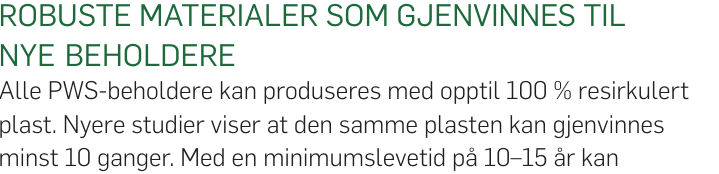

DR-003
Document review · 13 October 2026
Product datasheet MGB 240 PWS,
read as a tender attachment.
The datasheet Strømbergs publish for the MGB 240 PWS, and the catalogue it belongs to, were read against Bilag 2. Nothing here is a score. The buyer scores.
MGB 240 PWS. Technical datasheet, 3 pages, file dated 2025.
PWS avfallsbeholdere. Catalogue, 24 pages, file dated 2025.
Eight sizes, 80 to 1000 litres, each have their own datasheet.
Method
Bilag 2 sets sixty numbered requirements. Twenty-six ask for a delivery plan, an option price or a complaints procedure, which no datasheet answers. Thirty-four remain.
Answered means a reader can verify it today. Partial means the subject is raised and nothing commits. Absent means nothing to point at.
The count
Twelve of
thirty-four
can be
answered.
Krav 1, 2, 6, 7, 9, 10, 11, 13, 14, 18, 22, 27.
Krav 3, 4, 8, 15, 16, 17, 23, 25, 41, 46, 57, 60.
Krav 5, 12, 19, 20, 21, 24, 26, 28, 47, 58.
Twenty-eight of the thirty-four ask the supplier to confirm or describe, and those answers are written fresh for the bid. This is what an evaluator can verify in the material behind them.
Findings / Sheet 2
DR-003
Four things an evaluator meets first.

Finding 01 / Krav 57, A · climate 30 of 100
The ceiling is in the catalogue.
«Forpliktende minimumsandel PCR (vekt-%) oppgis separat…»
The catalogue says up to, which is a ceiling. None of the eight datasheets mentions recycled plastic.

Finding 02 / Krav 5 and 3, both A
EN 840 everywhere, never to a part.
«…i tråd med kravene i NS-EN 1501-5.»
The certification is on every datasheet, with no part number. NS-EN 1501-5 appears nowhere in the material.

Finding 03 / Krav 28, A
Ten options, no spare parts.
«Som minimum skal lokk, lokkplugger, komplette hjulsett og akslinger tilbys.»
Lid plugs, wheels and axle are given as technical data. None of them is offered as a part.
Finding 04 / Krav 41, A
Three colours, no code.
«Fargen på beholderne (uten lokk) skal være mørk grå, RAL 7016, eller tilsvarende.»
The datasheet shows the colours as swatches. A swatch cannot be compared with a RAL code.
Wheel diameter, SVHC and the Nordic climate are answered. What is missing is mostly figures that appear nowhere.